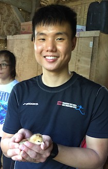

|  | NG Zhi ShengHonours Student
Email: e0004012(AT)u.nus.edu |
Background
I first took an interest in the natural world when I was young--watching documentaries and reading books fascinated me more than it would have others. I am currently pursuing a degree in Environmental Studies, which gives me opportunities to learn about the diversity and ecology of the Earth that we live in.
I was introduced to the marine world a few years ago when I took my first dive, and have since wanted to find out more about this world that is immediately breath-taking, and entirely different from what we are used to. Taking up a project and accruing knowledge about marine life in the REL will help me as I decide on the possibility of taking up marine research and conservation in the future.
Honours Project
My project aims to look at the functional diversity of fishes in various sites on the Southern Islands of Singapore, with the aims of assessing the resilience of the fish community, as well as the possible factors contributing their differences. Videography of the fish population along five 20m-long transects at the various sites will be the primary means of data collection, as an indication of the types of species in the area. Potential use of this study could be in the fields of conservation, where the link between ecological or biological factors and the resultant fish community resilience can inform conservation efforts, especially for communities with unique functional traits.